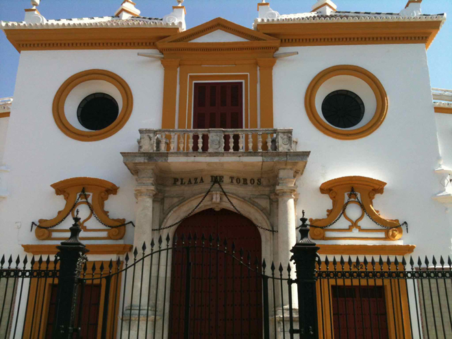
We drove up from Mijas to Seville, leaving the car in an enormous underground carpark. We visited the Bullring (Plaza de toros de la Real Maestranza de Caballería de Sevilla) - a 12,000-capacity circular ring on which construction began in 1749 to replace the rectangular bullring that was previously located there. We thought its baroque facade looked like a surprised owl.
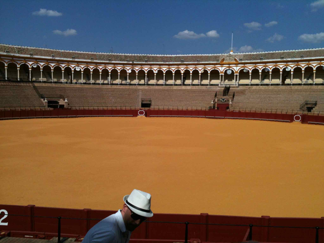
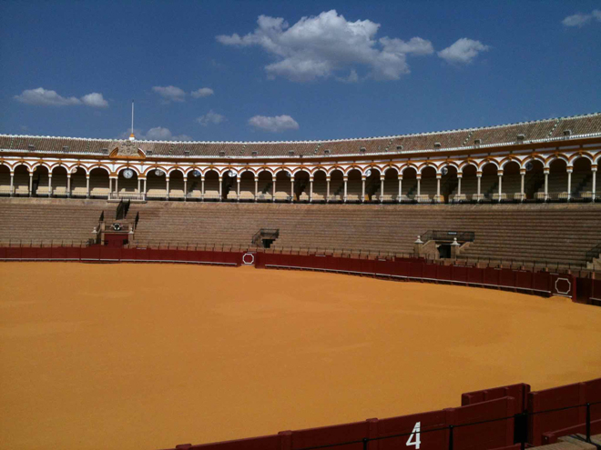
The inner facade of the plaza (called the Palco del Príncipe or Prince's Box) was completed in 1765. This 'box' consists of two parts: the access gate through which the successful bull-fighters exit, and the theatre box itself, which is reserved for the exclusive use of the Spanish Royal Family. The Palco was built for the Infante de España, Felipe de Borbón, son of Felipe V and Isabel de Farnesio.
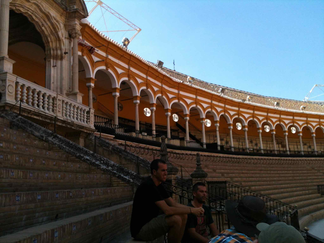
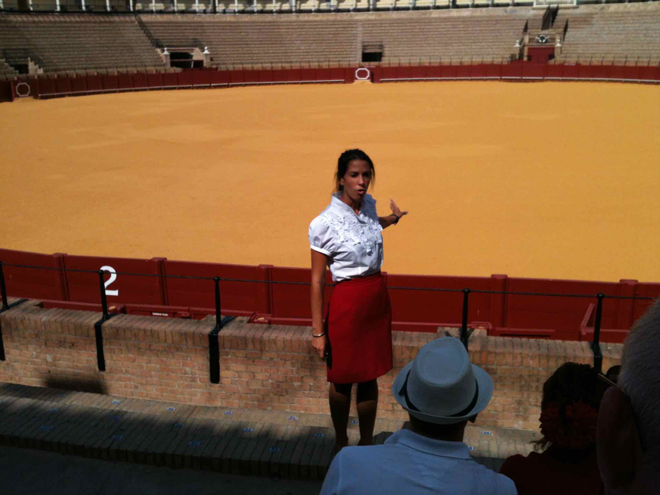
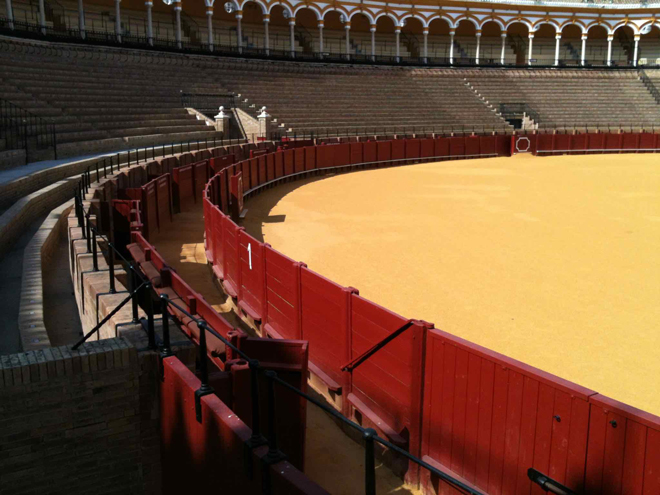
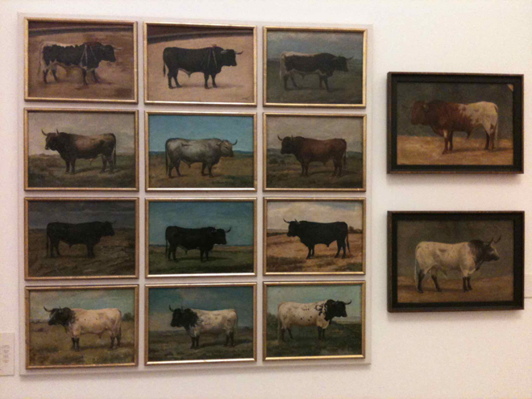
Below ground level there was another world - stables for the horses, enclosures for the bulls and an exhibition which included paintings of famous bulls, costumes worn by celebrated toreadors and a chapel where bull-fighters prayed for success and that they would not be gored by the bull.
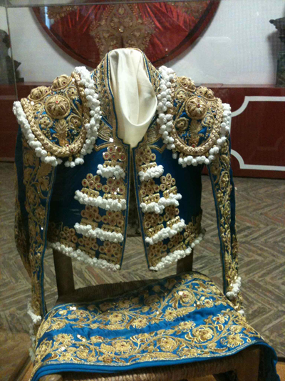
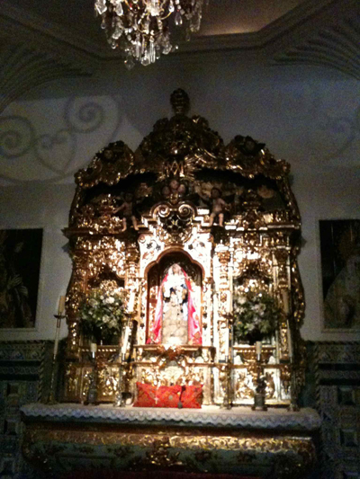
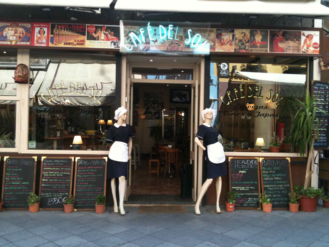
Time for lunch and we were pleased to stumble across this charming little bar which did an excellent meal for us - with a glass of ice-cold white Rioja.
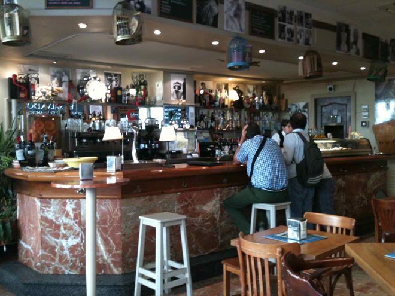
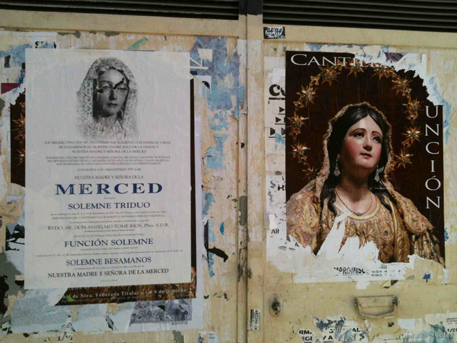
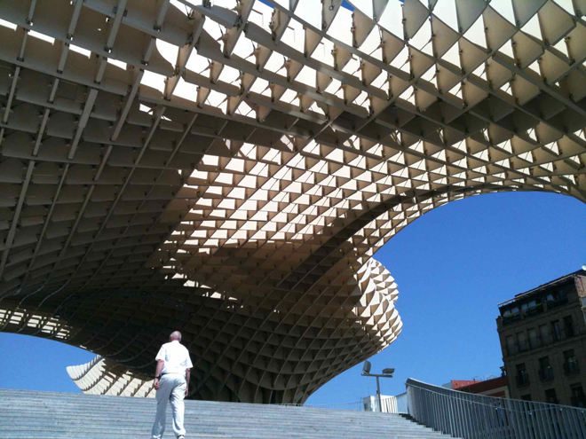
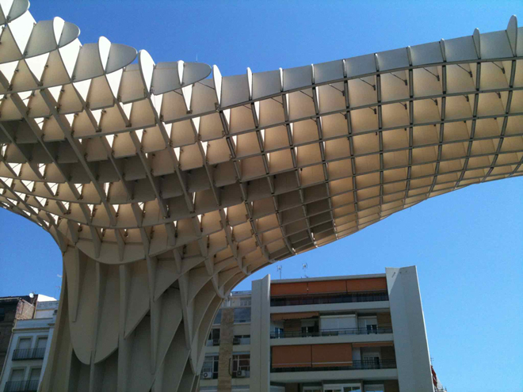
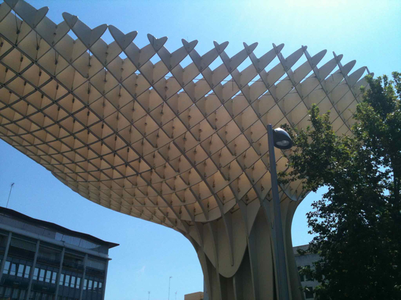
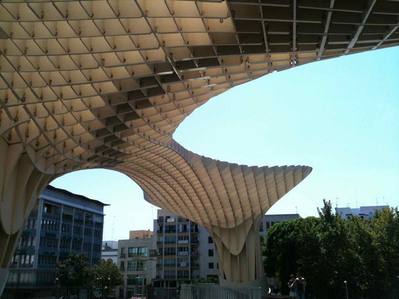
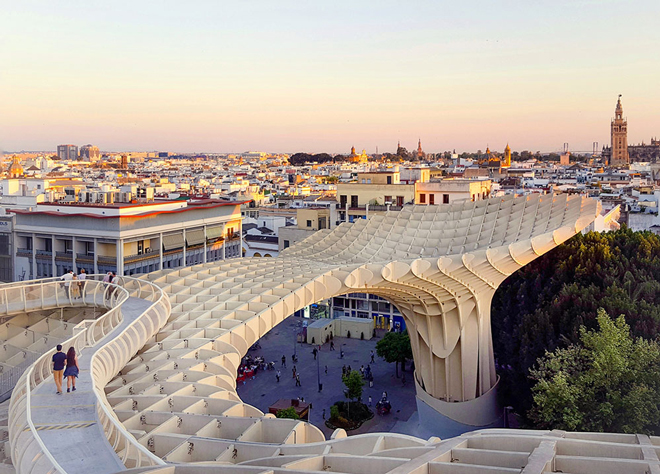
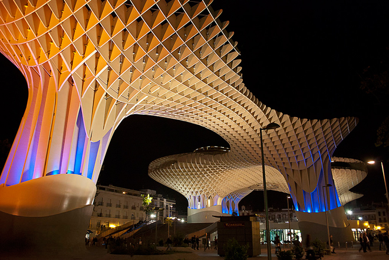
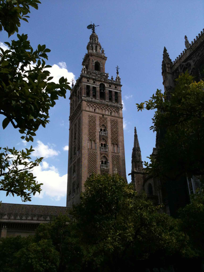
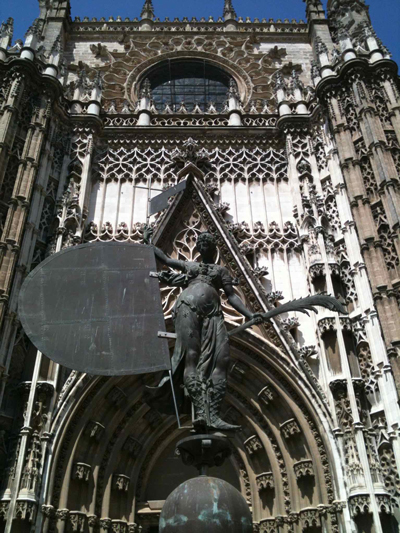
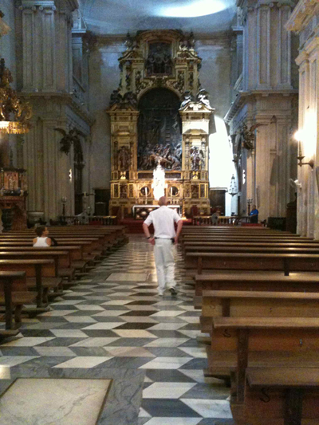
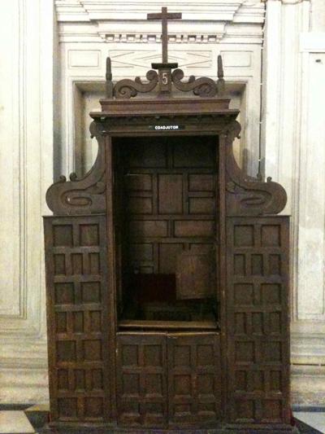
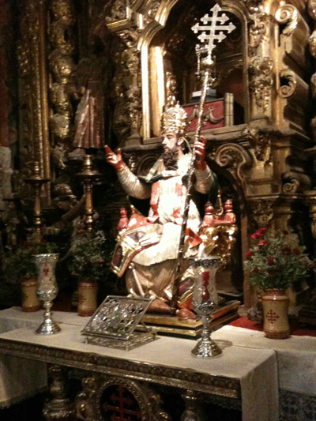
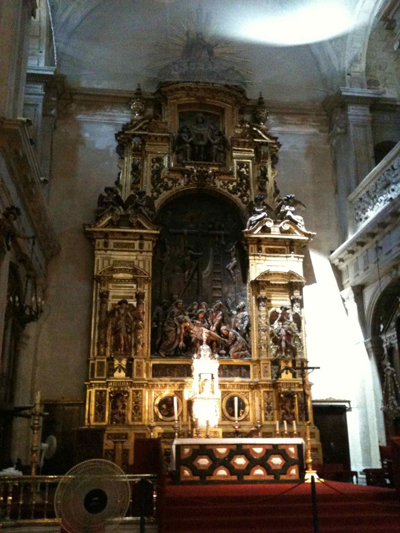
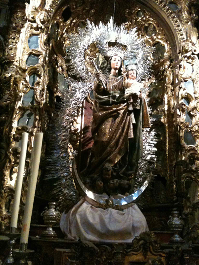
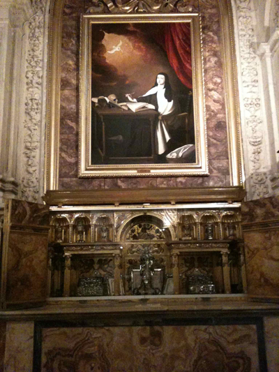
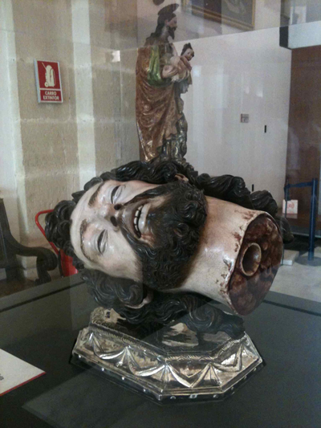
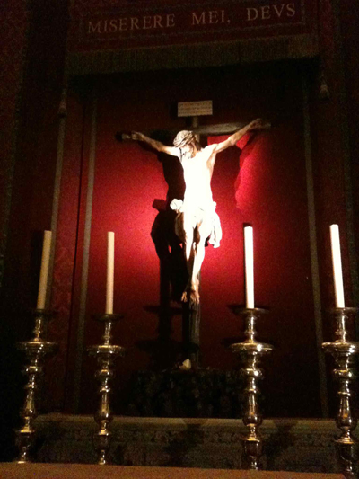
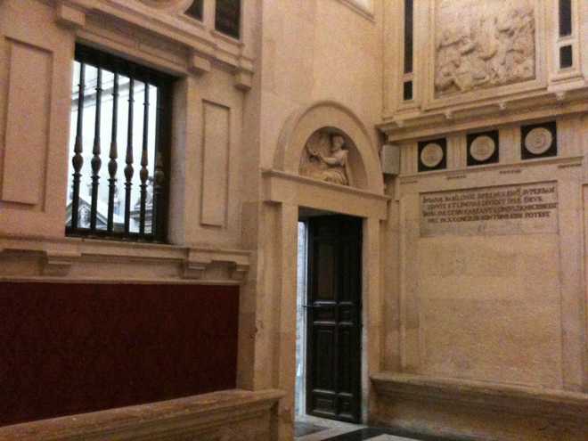
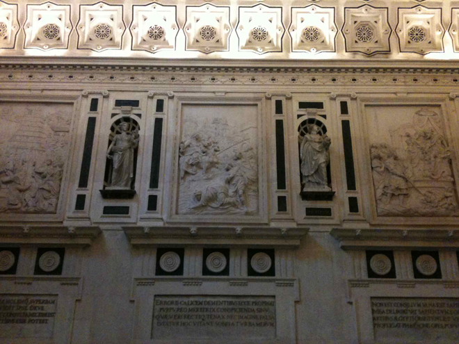
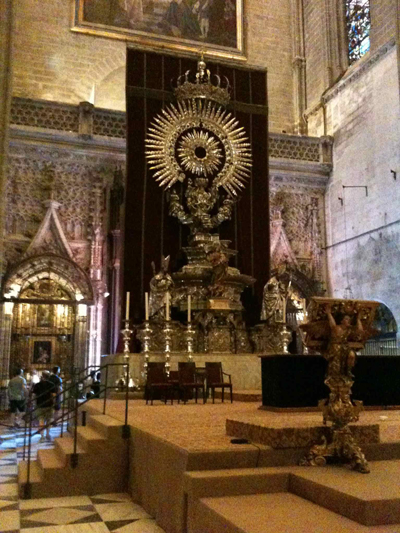
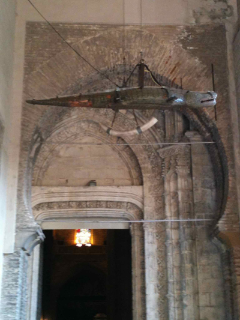
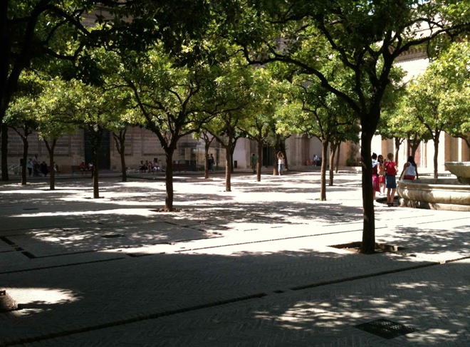
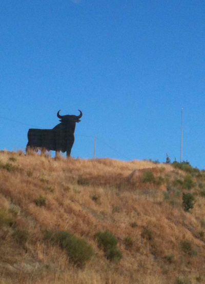
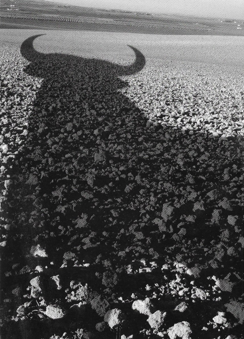